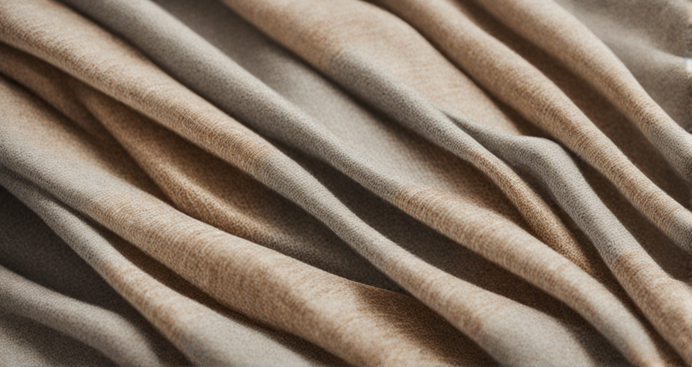

Kunal
Rana
Eco-Friendly Fashion: Sustainable Fabrics and Eco-Conscious Brands
In a world awakening to the urgent need for environmental consciousness, the fashion industry is undergoing a significant transformation towards sustainability. Eco-friendly fashion, championing sustainable fabrics and eco-conscious brands, has emerged as a beacon of hope in our fight against climate change. This paradigm shift in the fashion landscape is not merely a trend; it’s a commitment to a greener future. At its core, eco-friendly fashion advocates for the use of sustainable materials and ethical practices, redefining the way we perceive and produce clothing.
Central to this movement are sustainable fabrics, crafted from organic, recycled, or biodegradable materials. From organic cotton, grown without harmful pesticides, to innovative fabrics made from recycled plastic bottles, sustainable materials are rewriting the narrative of fashion production. These fabrics not only reduce the industry’s carbon footprint but also diminish the harmful impact on our ecosystems. Embracing natural dyes and reducing water usage in the dyeing process further emphasizes the industry's commitment to eco-conscious practices, nurturing the delicate balance between fashion and the environment.
Choosing eco-friendly fashion isn't just a choice; it's a commitment to the planet. Fashioning a better world, one sustainable thread at a time.
Alongside sustainable fabrics, eco-conscious brands play a pivotal role in shaping the future of fashion. These brands prioritize transparency, ethical labor practices, and environmental responsibility. They invest in fair wages, safe working conditions, and community development, ensuring that every piece of clothing embodies not only style but also social integrity. By embracing a circular economy, these brands promote recycling, upcycling, and reducing waste. They encourage consumers to participate in this cycle by choosing quality over quantity and advocating for mindful consumption.
In the words of Stella McCartney, a pioneering advocate of sustainable fashion, “We are the change-makers of our industry. We are the ones who can make a difference.” Indeed, eco-friendly fashion is a testament to our collective power to drive positive change. By supporting brands that champion sustainability and opting for clothing made from sustainable fabrics, we become allies in the global movement towards a more sustainable and compassionate fashion industry.
In the realm of fashion and self-expression, the beauty lies in the freedom it offers to experiment and evolve. Your style is not bound by rules or limitations; it’s an ever-changing canvas where you can paint with different textures, colors, and patterns. Just as life is a journey of self-discovery, fashion becomes a dynamic part of that expedition. As you grow, your tastes may transform, and your wardrobe adapts alongside your evolving identity.
In doing so, we not only adorn ourselves with style but also wear our values, making a statement that fashion can be beautiful, ethical, and eco-friendly – harmonizing with the planet rather than depleting it.